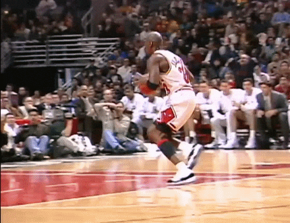

Es uno de mis favoritos porque fue el inicio de su carrera y de todos los logros que consiguió.
Me gusta porque consiguió sus seis campeonatos y demostró la importancia del trabajo en equipo.
Lo elegí porque demuestra que Jordan todavía tenía ganas de jugar baloncesto, incluso después de haberse retirado.
Este es uno de los movimientos que más me gustan de Michael Jordan por su habilidad para saltar y hacer jugadas impresionantes.
